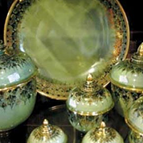

"ส้มโอหวาน ข้าวสารขาว ลูกสาวงาม ข้าวหลามหวานมัน สนามจันทร์งามล้น พุทธมณฑลคู่ธานี พระปฐมเจดีย์เสียดฟ้า สวยงามตาแม่น้ำท่าจีน" .



วัดสามพราน
วัดสามพราน ตั้งอยู่ที่ตำบลสามพราน อำเภอสามพราน มีเนื้อที่ทั้งหมดราว ๆ 38 ไร่ โดดเด่นด้วยสถาปัตยกรรมสไตล์ไทย-จีน
ดูเพิ่มเติมองค์พระ
วัดพระปฐมเจดีย์ราชวรมหาวิหาร ตั้งอยู่ที่ตำบลพระปฐมเจดีย์ อำเภอเมืองนครปฐม มีลักษณะเป็นเจดีย์ทรงลังกากลมสูงใหญ่
ดูเพิ่มเติมวัดไร่ขิง
วัดมงคลจินดาราม หรือวัดไร่ขิง ตั้งอยู่ริมแม่น้ำท่าจีน ในบริเวณตำบลไร่ขิง อำเภอสามพราน เป็นวัดที่ชาวนครปฐมและพุทธศาสนิกชนให้ความเคารพนับถือ
ดูเพิ่มเติมพุทธมณฑล
พุทธมณฑล ตั้งอยู่ที่ตำบลศาลายา อำเภอพุทธมณฑล เป็นสถานที่สำคัญทางพุทธศาสนา มีพื้นที่กว้างขวางมากถึง 2,500 ไร่
ดูเพิ่มเติมตัวอย่างวิดีโอ
Some quick example text to build on the card title and make up the bulk of the card's content.
ดูเพื่มเติม